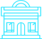
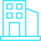
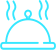
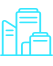

Уфа
физико-математическая:
«Уфа сквозь призму
математики и физики»

Продолжительность: 3 часа 40 минут
Протяженность: 22 км
Автор-разработчик: Кужаев А.Ф., Белова А.С., Лушников Н.Д.

Количество участников: группа до 15 человек
Категория экскурсантов: от 12 до 18 лет
МАРШРУТ ЭКСКУРСИИ:
Перемещение экскурсантов предполагается на экскурсионном автобусе

Кампус Евразийского НОЦ
Кампус Евразийского НОЦ
ул.
Заки
Валиди, 32/2

Музей связи
ул. Ленина 30/1

Интерактивный музей
“Интеллектус”
Интерактивный музей
“Интеллектус”
ул.
Софьи Перовской, 52/2

Эврен, Бистро
Эврен, Бистро
проспект Октября,
128
(обед)
Уфимский городской
планетарий
проспект
Октября, 79/2

УФИЦ РАН
УФИЦ РАН
проспект Октября, 71